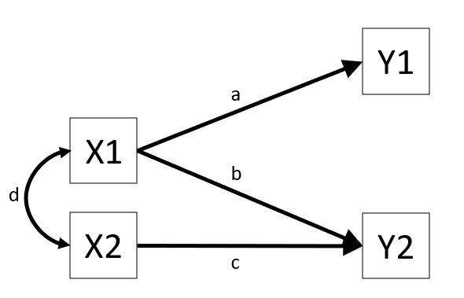
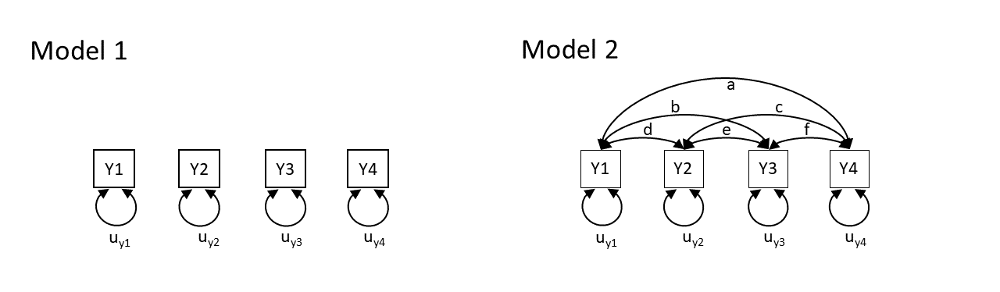
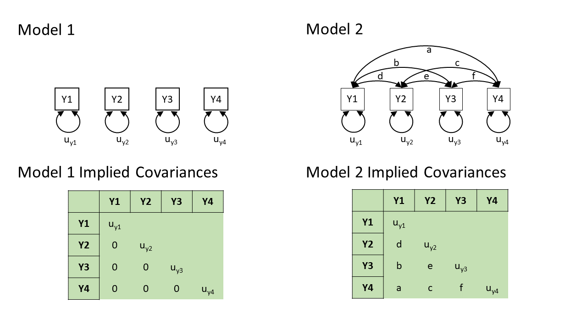
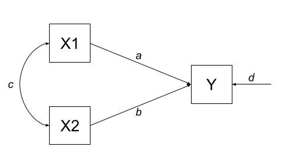
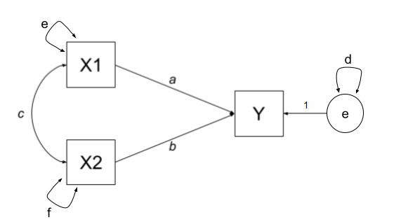
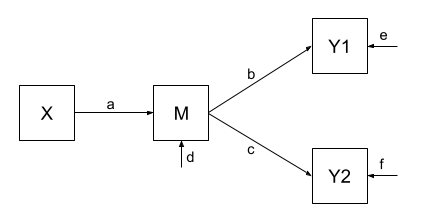
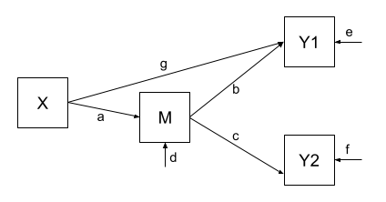

6: Path Analysis
This reading:
- The high level idea of path analysis, and presenting models in diagrams.
- An introduction to ‘path tracing’ — how a graphical model can imply the covariances we would expect to observe.
More thinking in diagrams!
Over the last few chapters, we have started to use diagrams as a way of presenting the structure of different models. The diagrams are made up of variables and the relationships between them, and we have followed certain conventions:
- squares = variables we observe
- circles = variables we don’t observe1
- single-headed arrows = regression paths (pointed at the outcome)
- double-headed arrows = covariance/correlation
We are going to delve more into these diagrams, and to do that we are going to start distinguishing between variables in a diagram that are exogenous (only arrows out) and those that are endogenous (arrows in).
Terminology
- Exogenous variables are a bit like what we have been describing with words like “independent variable” or “predictor”. In a path diagram, they have no arrows coming into them from other variables in the system, but have paths going out to other variables.
- Endogenous variables are more like the “outcome”/“dependent”/“response” variables we are used to. They have some arrow coming into them from another variable in the system (and may also - but not necessarily - have paths going out from them).
These sort of diagrams represent theoretical models in that they indicate a theorised flow of information between variables. For example, the diagram in Figure 1 posits that variable Y1 listens to variable X1 (i.e., if the value of X1 changes, we predict that variable Y1 changes by amount a) and that it doesn’t listen to variable X2 or Y2.
The term “path analysis” gets used to refer to how these sort of diagrams work — and the method of estimating the parameters (the values on the arrows) — when there are no latent variables (don’t worry, we’ll bring them back in a couple of chapters!).
Fitting path models in R
This reading is mainly focused on how path analysis works. The examples will show R being used to fit path analysis models, but we will primarily be getting to grips with how the diagrams function as presentations of the models, and how we can numerically compare the implications of different diagrams.
As a brief introduction to the basics of doing path analysis in R, we can liken it to fitting CFA models (as in Chapter 4). The process is very similar: we specify all the different theorised paths in our model and then fit it to the data (this time using using the sem() function instead of cfa()). So for the model presented in Figure 1, we would specify our model (including all 3 regression paths, and the covariance between X1 and X2), before fitting the model to the data.
# specify the model:
mod <- "
Y1 ~ X1
Y2 ~ X1 + X2
X1 ~~ X2
"
# fit the model
mod.est <- sem(mod, data = somedata)We can then use functions like summary(), parameterestimates() and fitmeasures() to examine the fitted model.
Covariance modelling and graphical models
The logic behind “path analysis” is to estimate a system of equations that maximise the probability of observing our sample data.
- We specify our theoretical model of the world as a system of paths between variables that represent which variables influence which other variables. This is simply a diagramatic way of specifying a set of equations.
- A single headed arrow from \(X \rightarrow Y\) indicates that Y “listens to” X — if X changes, then Y will change accordingly (but not vice versa)
- A double headed arrow between \(X \leftrightarrow Y\) indicates that these two variables are related, not because one causes the other, but because there is some mechanism outside of our model that results in these two variables being associated.
- We collect data on the relevant variables and we observe a covariance matrix (i.e. how each variable covaries with every other variable).
- We fit our model to the data, and evaluate how well our theoretical model (the estimated values for our path coefficients) can reproduce the observed covariance matrix.
Step 3 here may feel a little opaque. One way to think of it is that in a simple regression model lm(Y ~ 1 + X + Z + W), we fit the model to some data, and get out coefficients. We can then use these coefficients to calculate a predicted value of Y for each observation in the data. So the model is trying to ‘reproduce’ Y from the coefficients.
In path analysis, this logic is the same, but instead of trying to reproduce a single outcome variable, our models are trying to reproduce all the covariances between all the variables. To understand this better, we’ll take a look at how a path model implies a set of relationships we would observe.
Model implied covariances
When we put estimates on the arrows in that diagram, we are implying what covariances we would expect to see between our observed variables.
To take this to the extreme, consider two theoretical models presented graphically:

Model 1 claims that y1 to y4 are uncorrelated. Model 2 claims that y1 and y4 are all correlated with one another. Neither of these models are very useful, but think about what they say about the variables. Model 2 is just saying “everything is related to everything else”, and Model 1 is a stronger claim of “nothing is related to anything else”.
So both of these theoretical models imply what we would expect to see in the covariances between the variables. In fact, with the labels on the arrows, they imply specific values for what we would expect see. Model 1 implies that we would see covariances of zero between all variables. Model 2 implies we would see covariances that correspond to each of the paths \(a, b, \ldots, f\) in the diagram.

In practice, these two models are two extreme ends of the spectrum — Model 2 will fit perfectly (i.e., we just need to estimate \(a, b, \ldots, f\) to be whatever the observed covariances are, and we can perfectly reproduce what we observe), and Model 1 will only fit well if none of the variables are in any way related to one another (not directly, and not via any other variables that we haven’t drawn here).In practice, our theoretical models will be somewhere in between, but they will still provide us with a set of implied covariances. These implied covariances will still be based on the estimated values of the paths in our model, but it becomes a bit more complex to work out how.
Now that we have seen the basic logic, we are going to go on a little exploration to see how this works for more complicated diagrams.
Note: in practice we won’t have to do this ourselves. It all gets handled by the packages we will use in R.
Path tracing
Thanks to Sewal Wright, we can figure out the covariance between any two variables in a diagram by taking the sum of all “compound paths” between the two variables2.
compound paths are the products of any paths you can trace between A and B for which there are:
- no loops. If you are tracing from one variable to another, you cannot pass through the same variable twice in a particular path.
- no going forward then backward (and no going forward then across a curved arrow)3
- maximum of one curved arrow per path
If we look at a path diagram and find all the distinct routes to get from variable A to variable B that adhere to the 3 rules above, and sum these routes up, then we get the implied covariance between A and B. Routes are ‘distinct’ if they contain different coefficients, or encounter coefficients in a different order.
other assumptions
For us to be able to do this, a path diagram must have no two-way causal relations or feedback loops (e.g. A\(\rightarrow\)B\(\rightarrow\)C\(\rightarrow\)A).
We will also be assuming various things when we use this method.
- All relations are linear and additive (this is because an arrow is essentially a regression, so we have these regression assumptions)
- ‘Causes’ are unitary (if A\(\rightarrow\)B and A\(\rightarrow\)C, then it is presumed that this is the same aspect of A resulting in a change in both B and C, and not two distinct aspects of A, which would be better represented by two correlated variables A1 and A2).
- The variables are measured without error (we will relax this assumption later on by bringing back in the latent variables).
- Endogenous variables are not connected by correlations (we would correlate the residuals instead, because residuals are not endogenous).
- The residuals (error terms) are uncorrelated with exogenous variables.
- All our exogenous variables are correlated (unless we specifically assume that their correlation is zero).
This technique is known as “Path Tracing”, because we do just that - we trace our finger from one variable to another, along the paths, and we get out their implied covariance.
Let’s see it in action!
Example 1
Note: this process works with covariances, but it’s usually easier for us to think in correlations (because it’s a standardised metric), so in the examples below all the variables are standardised to have a variance of 1, meaning that covariance = correlation.
Let’s start with an example in which we have two exogenous variables X1 and X2 that both influence a single outcome Y. As a diagram our model looks like Figure 2, and we have labelled all the paths with lower case letters \(a, b, c, \text{and } d\).
This is actually just a multiple regression expressed as a path diagram!

According to Wright’s tracing rules above, we can write out the equations corresponding to the 3 covariances between our observed variables (remember that \(cov_{a,b} = cov_{b,a}\), so it doesn’t matter at which variable we start the paths).
- There is only one way to move between X1 and X2, according to Wright’s rules, and that is to go via the double headed arrow \(c\).
- There are two ways to go from X1 to Y:
- we can go across the double headed arrow to X2, and then go from X2 to y (path \(bc\))
- or we can go directly from X1 to Y (path \(a\)).
- we can go across the double headed arrow to X2, and then go from X2 to y (path \(bc\))
- To get from X2 to Y, we can either:
- go via X1 (path \(ac\))
- go directly (path \(b\))
| covariance | paths |
|---|---|
| \(cov_{x1,x2}\) | c |
| \(cov_{x1,y}\) | a + bc |
| \(cov_{x2,y}\) | b + ac |
So now lets fit this model to some data. We can do this using the lavaan package, which will use maximum likelihood estimation (finding the set of values for a, b, c, and d that result in the maximum probability of seeing our sample data).
library(lavaan)
# our data:
egdata1 <- read.csv("https://uoepsy.github.io/data/path_eg1.csv")
# our model formula
mod.formula1 <- "y ~ x1 + x2"
# fitted to some data
mod.est1 <- sem(mod.formula1, data = egdata1)What we get out of the model are the estimates for the path coefficients:
# extract parameters:
parameterestimates(mod.est1) |> select(lhs,op,rhs,est) lhs op rhs est
1 y ~ x1 0.612
2 y ~ x2 0.382
3 y ~~ y 0.310
4 x1 ~~ x1 0.995
5 x1 ~~ x2 0.359
6 x2 ~~ x2 0.995With this set of path estimates (\(a = 0.61\), \(b = 0.38\), and \(c = 0.36\)), we can calculate the covariance that is implied by our estimated model:
| covariance | paths | model implied covariance |
|---|---|---|
| \(cov_{x1,x2}\) | c | \(0.36\) |
| \(cov_{x1,y}\) | a + bc | \(0.61 + (0.38 \times 0.36) = 0.75\) |
| \(cov_{x2,y}\) | b + ac | \(0.38 + (0.61 \times 0.36) = 0.60\) |
We can then examine how far off this is from the observed covariance matrix. In this specific case, our covariance matrix has 6 values in it, and we are estimating 6 things (see the parameters above). This means that there is unique solution, and our model is just-identified (or “saturated”), and is capable of perfectly reproducing the covariance matrix.
cov(egdata1) |> round(2) x1 x2 y
x1 1.00 0.36 0.75
x2 0.36 1.00 0.60
y 0.75 0.60 1.00
why 6? the model in full
The variances of individual variables (also covariances of each variable with itself) are also in our covariance matrix on the diagonals, and in full, our model also includes the estimation of variances of exogenous variables, as well as the residual variance of endogenous variables. These can be represented as the paths \(d\), \(e\) and \(f\) in Figure 3.
| covariance | paths |
|---|---|
| \(cov_{x1,x2}\) | c |
| \(cov_{x1,y}\) | a + bc |
| \(cov_{x2,y}\) | b + ac |
| \(cov_{x1,x1}\) | e |
| \(cov_{x2,x2}\) | f |
| \(cov_{y,y}\) | d + a\(^2\) + b\(^2\) + acb + bca |

Although this is really neat (we can now actually calculate multiple regression coefficients from seeing the covariance matrix - we don’t need the actual data!), it doesn’t really show off the benefits of this type of modelling, because it is really nothing more than we got from lm(y~x1+x2). But the path analysis approach extends to much more complex theoretical models.
Example 2
One benefit of a path model over a regression model is that we can include multiple endogenous variables. In Figure 4, we can see now a model in which we have two outcomes (Y1 and Y2), an exogenous predictor X, and a variable M that sits on the path between X and the two outcomes. In this case, M is itself an outcome of Z.

Using the path tracing rules:
- There is only one way to get between X and M, and that is the path \(a\).
- There is only one way to get between M and Y1 (path \(b\))
- And only one way to get between M and Y2 (path \(c\))
- To get between X and Y1, we can only go via \(ab\)
- And to get between X and Y2, we can only go via \(ac\)
- To get between Y1 and Y2, we can go backwards to M and then forwards to Y2, the path \(bc\).
| covariance | paths |
|---|---|
| \(cov_{x,m}\) | a |
| \(cov_{m,y1}\) | b |
| \(cov_{m,y2}\) | c |
| \(cov_{x,y1}\) | ab |
| \(cov_{x,y2}\) | ac |
| \(cov_{y1,y2}\) | bc |
As with the previous example, we fit our model to some sample data, and get some estimates for the parameters:
Code
# our data:
egdata2 <- read.csv("https://uoepsy.github.io/data/path_eg2.csv")
# our model formula
mod.formula2 <- "
y1 ~ m
y2 ~ m
m ~ x
# by default, lavaan will correlate the residual variance
# for the purposes of this example, to match our model exactly,
# we'll constrain it to 0:
y1~~0*y2
"
# fitted to some data
mod.est2 <- sem(mod.formula2, data = egdata2)
# extract parameters:
parameterestimates(mod.est2) |> select(lhs,op,rhs,est) lhs op rhs est
1 y1 ~ m 0.520
2 y2 ~ m 0.187
3 m ~ x 0.461
4 y1 ~~ y2 0.000
5 y1 ~~ y1 0.728
6 y2 ~~ y2 0.963
7 m ~~ m 0.786
8 x ~~ x 0.998And these estimated path coefficients of \(a = 0.46\), \(b = 0.52\) and \(c = 0.19\), imply that our covariances are:
| covariance | paths | model implied covariance |
|---|---|---|
| \(cov_{x,m}\) | a | \(0.46\) |
| \(cov_{m,y1}\) | b | \(0.52\) |
| \(cov_{m,y2}\) | c | \(0.19\) |
| \(cov_{x,y1}\) | ab | \(0.46 \times 0.52 = 0.24\) |
| \(cov_{x,y2}\) | ac | \(0.46 \times 0.19 = 0.09\) |
| \(cov_{y1,y2}\) | bc | \(0.52 \times 0.19 = 0.10\) |
Finally, our observed covariances are here:
cov(egdata2) |> round(2) y1 y2 m x
y1 1.00 0.06 0.52 0.49
y2 0.06 1.00 0.19 0.06
m 0.52 0.19 1.00 0.46
x 0.49 0.06 0.46 1.00But wait.. unlike the first example, this one does not perfectly reproduce our the covariances we observe. This is because our model is over-identified. We are trying to recreate our covariance matrix with 10 values in it using only 7 unknown parameters. Over-identification is a good thing! It means that we can assess the fit of the model to the data — we can ask “how badly does it fit?” (whereas the previous model by definition just fit perfectly). and evaluate the plausibility of the proposed relationships!
This is just like the discussion in the Chapter on CFA, where we had lots of metrics of “model fit”. The most basic on is the \(\chi^2\) test of the discrepancy between model-implied and observed covariance matrices. The significant result here suggests our model fits poorly
fitMeasures(mod.est2, c("chisq", "df", "pvalue")) chisq df pvalue
57.074 3.000 0.000 We can see this specifically — some of our “model implied covariances” are quite different to those in our observed covariance matrix (e.g, the model implies that \(r_{x,y1} = 0.24\), but we actually observe it to be \(0.49\)!).
Example 3
In Example 2, our theoretical model proposed that all of the association that we might observe between X and Y1 is due to the relationship that X has with M, and that M in turn has with Y1.
Let’s use the same dataset, but now consider an alternative model (see Figure 5) could propose that X still directly influences Y1 beyond the influence it exerts via M. We would indicate this via an additional path (path \(g\) in Figure 5).

Fitting this model (to the same data), we get out estimates for the paths (including this additional parameter):
Code
# our model formula
mod.formula3 <- "
y1 ~ m + x
y2 ~ m
m ~ x
# by default, lavaan will correlate the residual variance
# for the purposes of this example, to match our model exactly,
# we'll constrain it to 0:
y1~~0*y2
"
# fitted to the same data as for example 2
mod.est3 <- sem(mod.formula3, data = egdata2)
# extract parameters:
parameterestimates(mod.est3) |> select(lhs,op,rhs,est) lhs op rhs est
1 y1 ~ m 0.375
2 y1 ~ x 0.313
3 y2 ~ m 0.187
4 m ~ x 0.461
5 y1 ~~ y2 0.000
6 y1 ~~ y1 0.651
7 y2 ~~ y2 0.963
8 m ~~ m 0.786
9 x ~~ x 0.998Our covariances between variables are, in this model, expressed as:
| covariance | paths | model implied covariance |
|---|---|---|
| \(cov_{x,m}\) | a | \(0.46\) |
| \(cov_{m,y1}\) | b + ag | \(0.38 + (0.46 \times 0.31) = 0.52\) |
| \(cov_{m,y2}\) | c | \(0.19\) |
| \(cov_{x,y1}\) | ab + g | \((0.46 \times 0.38) + 0.31 = 0.49\) |
| \(cov_{x,y2}\) | ac | \(0.46 \times 0.19 = 0.09\) |
| \(cov_{y1,y2}\) | bc + gac | \((0.38 \times 0.19) + (0.31 \times 0.46 \times 0.19) = 0.10\) |
And now, when we look at our observed covariance matrix, we are doing a much better job of recreating it, than we did with the model from Example 2!
cov(egdata2) |> round(2) y1 y2 m x
y1 1.00 0.06 0.52 0.49
y2 0.06 1.00 0.19 0.06
m 0.52 0.19 1.00 0.46
x 0.49 0.06 0.46 1.00And note that this model is not indicated as fitting poorly:
fitMeasures(mod.est3, c("chisq", "df", "pvalue")) chisq df pvalue
1.062 2.000 0.588 model comparison
We can now do things such as compare models. So if we have competing theories about the same set of variables, we can now test them against one another!
lavTestLRT(mod.est2, mod.est3)
Chi-Squared Difference Test
Df AIC BIC Chisq Chisq diff RMSEA Df diff Pr(>Chisq)
mod.est3 2 3916.8 3946.3 1.0624
mod.est2 3 3970.8 3996.1 57.0741 56.012 0.3317 1 7.204e-14 ***
---
Signif. codes: 0 '***' 0.001 '**' 0.01 '*' 0.05 '.' 0.1 ' ' 1Footnotes
hexagons = composite variables, like our diagrams for PCA but these are rarely used in practice!↩︎
if we were wanting correlations, and we didn’t have standardised variables, then these would have to be divided by the corresponding standard deviation estimates for the variables↩︎
You can’t go out of one arrow-head into another arrow-head. We can go heads-to-tails, or tails-to-heads, not heads-heads↩︎